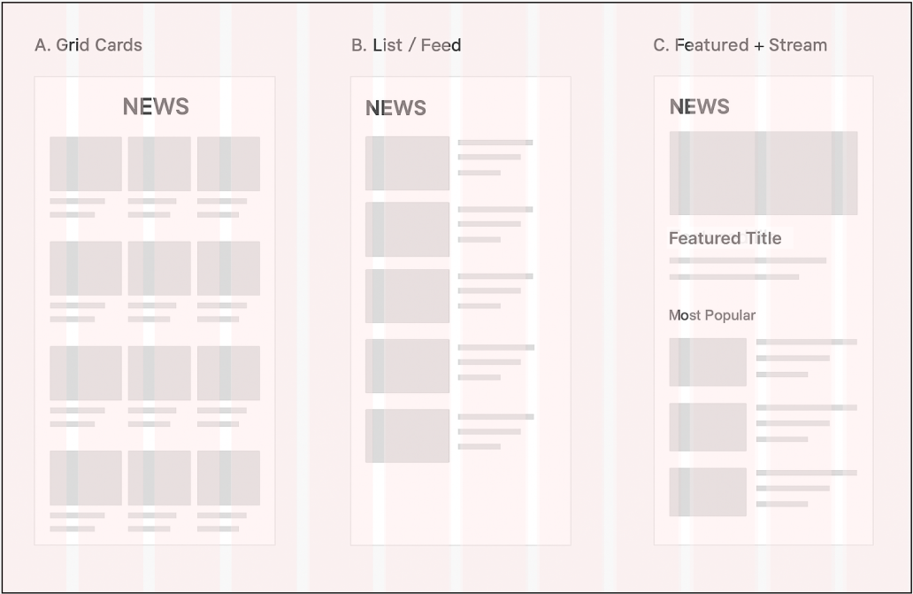

Myanmar Election 2020
Five years ago, historic elections elevated Aung San Suu Kyi's National League for Democracy to power after a long and peaceful struggle against military rule. The nation votes again Nov. 8, 2020 in what will be a popularity test of her civilian government.
Project Snapshot
A responsive, interactive data-driven report designed to make Myanmar’s 2020 election results accessible, clear, and engaging. The experience combines maps, party profiles, multimedia, and infographics into a cohesive digital storytelling platform.
My Role
UX/UI Design
Used Figma to design wireframes and prototypes that structured and enhanced the project’s narrative flow.
Front-End Development
Built with HTML, CSS, Bootstrap, SASS, JavaScript and Fourish for a smooth reading experience.
Implementation
Built for speed and accessibility — optimized SVGs, lazy-loaded media, and small JS bundles for low-bandwidth contexts.
Accessibility
Applied WCAG guidelines for accessibility, including high-contrast map colors, ARIA labels, alt text, and keyboard-friendly modals.
The Challenge
Myanmar’s 2020 general election involved dozens of political parties and thousands of candidates across two houses of parliament.
The challenge was to:
- Present complex, large-scale data in a way that feels approachable.
- Provide clear navigation between data views, news coverage, and visual storytelling.
- Ensure mobile-first responsiveness for audiences with low bandwidth and limited devices.
Prototyping & Testing
Design Iterations:
- Begin with wireframes for map interface and tab navigation.
- Develop mockups to explore layout solutions for news, videos and gallery modules.

- Build interactive prototypes to test user flows and responsiveness.
User Testing:
- Remote or field testing with diverse users, evaluating clarity of navigation, understanding of electoral results, and overall engagement.
Refinements:
- Incorporate feedback to enhance usability, accessibility, and visual appeal.
Final designs were created in Figma, with prototypes shared for stakeholder review and user testing.
Sitemap
- 1. Top Navigation / Main Sections
- Lower House & Upper House
- Interactive Map
- News & Video
- Infographic
- Gallery
- Parties & Leaders
- National League for Democracy (NLD)
- Union Solidarity and Development Party (USDP)
- People’s Pioneer Party (PPP)
- Union Betterment Party (UBP)
- United Nationalities Democracy Party (UNDP)
- People’s Party (PP)
- National Unity Party (NUP)
- United Democratic Party (UDP)
- Chin National League for Democracy (CNLD)
- Zomi Congress for Democracy (ZCD)
- Kachin State People’s Party (KSPP)
- Karen National Democratic Party (KNDP)
- Kayin Peoples Party (KPP)
- Kayah State Democratic Party (KSDP)
- Mon Unity Party (MUP)
- Arakan National Party (ANP)
- Arakan League for Democracy (ALD)
- Arakan Front Party (AFP)
- Shan Nationalities League for Democracy (SNLD)
- Shan Nationalities Democratic Party (SNDP)
- 2. Intro / Context Section
- Overview of previous election (2015)
- The upcoming election (Nov 8, 2020) as a test for the NLD’s popularity
- Issues: military power, ethnic conflict, COVID-19 impacts
- 3. Lower House / Pyithu Hluttaw
- Details (e.g., number of seats cancelled, etc.)
- 4. Upper House / Amyothar Hluttaw
- Seat-contestation details
- 5. Statistics on Contested Seats
- Lower House: seats not contested, state details
- Upper House: same
- State & Regional Assemblies: seats not contested
- 6. Interactive Map / Region Data Table
- State/Region
- Population
- Voters
- Candidates
- National Political Parties & Leaders
- Ethnic Minority Parties
- 7. Credits / Attribution Section
- Produced by, Graphic illustrations, Photos, Video, Information, Editing, Producer, © rights
- 8. Social Media / External Links
- YouTube
Audience & Research
Primary users: Myanmar citizens, journalists, NGOs, and international observers.
Research Approach: User interviews, surveys, and competitive analysis of existing election reporting platforms to identify user needs and pain points.
Citizen
Needs clear results and localized context to understand outcomes in their constituency.
Journalist
Quick, reliable reference for constituency and party wins during coverage.
Observer / NGO
Seeking clarity, context, accurate and verifiable visualizations suitable for reports and briefings.
UX Strategy
To reduce cognitive load we organized the report into modular sections. Users can scan high-level outcomes and drill down to constituency detail.
Final Implementation Highlights
Responsive Layouts
Describe media query adjustments, example: side-by-side module views on desktop collapse into stacked cards on mobile.
Interactive Elements
Hover effects on maps, clickable party cards with quick stats, smooth transitions between sections.
Performance Considerations
Lazy-loading of media in Gallery/News, optimized SVG or vector maps for speed, ensuring the report performs well under low-bandwidth conditions in Myanmar.
Visual Design & Accessibility
Color
Party-driven palette with accessible fallbacks for color-blind users.
Typography
Open Sans is a modern, versatile typeface that ensures readability across print, web, and mobile platforms, and pairs seamlessly with Montserrat.
Information Architecture
Interactive Map
Constituency-level results; hover and drill-down.
Lower & Upper House
Separate views for each chamber of parliament.


National Political Parties & Leaders
Card grid to compare parties, leaders, and wins.


Ethnic Minorities Parties & Leaders
Card grid to compare parties, leaders, and wins.
News & Video
Embedded videos paired with article summaries; optimized for quick scanning.

Gallery
Lightbox view for images to keep users immersed without losing context.

Outcomes
✅ Increased session duration as users explored multiple modules.
✅ Journalists cited the interactive maps as a key reference tool.
✅ Demonstrated how complex political data can be distilled into accessible UX.
Reflection & Next Steps
What Worked
• Modular IA for reduced cognitive load.
• Consistent visual identity across modules.
• Mobile-first performance optimizations.
Next Steps
• Real-time vote updates and change-tracking.
• Localization into Burmese and other regional languages.
• Advanced filters: region, party, candidate demographics.
⬆ Back to top